Quickstart end-to-end DoubleCloud services guide
This step-by-step quickstart will walk you through every major DoubleCloud resource. You will familiarize yourself with how to create, manage and make practical use of the resources in your brand new data management toolkit.
A typical use case for our service includes:
- Creating a cluster and a database for data storage.
- Transferring the data from the outside source to a DoubleCloud cluster.
- Analyzing the data using Visualization, our built-in BI tool.
You can see a flow of such a case in the following diagram:

There is a CSV file with some data we need to visualize and analyze. To do this, we transfer the file from S3 to a ClickHouse cluster. From there, we connect our Visualization service to it, prepare the data for visualization and build some impressive graphics from it.
Following this straightforward step-by-step quickstart tutorial, you will learn how to:
Keeping in mind your time, let's get to the point right now.
Prepare to acquire the data
The first things you need to do are to create a cluster and a database that will store the data for further processing and visualization.
You need to complete the following steps:
This is a resource allocation tool. It allows you to acquire CPU, memory and storage quotas to operate your databases.
This section will give you the understanding of how to talk to your cluster directly from the Linux terminal and use ClickHouse CLI toolkit.
This is your access management tool. It allows you to allow and block access to the data and resources on your cluster.
Create a Managed ClickHouse Cluster
{% include notitle quota-warning %}
-
Go to the console.
-
Select Clusters from the list of services on the left.
-
Click Create cluster in the upper-right corner of the page.
-
Select ClickHouse.
-
Choose a provider and a region closest to your geographical location.
-
Under Resources:
- Select a preset for CPU, RAM capacity and storage space. The first
s1-c2-m8preset will be more than enough for our tutorial. - Select
2replicas to improve performance. - Select
2shards to improve fault tolerance.
- Select a preset for CPU, RAM capacity and storage space. The first
-
Under Basic settings:
-
Enter the cluster Name:
doublecloud-quickstart. -
Keep the Version as is - this is the latest stable version of ClickHouse.
-
Click Submit.
Your cluster will appear with the Creating status on the Clusters page in the console. Setting everything up may take some time.
- When the cluster is ready to operate, its state in the console will change to
Alive.
Username and password info:
The superuser admin and its password are created automatically. You can find both the User and the Password in the Overview tab on the cluster page.
Create a ClickHouse database
This step gives you a glimpse into talking with your Managed ClickHouse cluster directly from your Linux system.
Please note - this tutorial is based on a DEB-based Linux distribution . You can use a standalone system or a Windows Subsystem for Linux solution.
You need to install clickhouse-client software to be able to talk to your new cluster via the Linux terminal:
-
Open your Linux terminal.
-
Connect to the ClickHouse official DEB repository from your Linux system:
sudo apt update && \
sudo apt install -y apt-transport-https ca-certificates dirmngr && \
sudo apt-key adv --keyserver hkp://keyserver.ubuntu.com:80 --recv E0C56BD4 && \
echo "deb https://repo.clickhouse.tech/deb/stable/main/" | sudo tee \
/etc/apt/sources.list.d/clickhouse.list
- Refresh the package list and install the software:
- Test if the installation was successful:
- You should see the following message:
ClickHouse client version <version number>
The software is ready to go. Let's connect to your new cluster:
-
Select Clusters from the list of services on the left.
-
Select the name of your cluster to open its information page. By default, you will see the Overview tab.
-
Under Connection strings, find the Native interface string and click Copy.
-
Paste the string into your Linux terminal and execute it. This string has the following structure:
clickhouse-client --host <FQDN of the host> \
--secure \
--user <Cluster user name> \
--password <Cluster user password> \
--port 9440
You are now connected to your cluster via the clickhouse-client. It's time to create the database for you Facebook Ads metrics data. Let's call it Sample-ClickHouse-DB:
- Type the following command in your Linux terminal:
- Test if the database was created successfully. Type
SHOW DATABASES. You will see the following readout:
The database is ready. Now we need to grant the DoubleCloud services access rights.
Transfer the data
Now it's time to set up the tools that will get the data from a remote source and transfer it to your Sample-ClickHouse-DB ClickHouse database. To accomplish this, you need to complete the following steps:
This is your data receiver. It will connect to a remote source and send the data to your ClickHouse cluster.
This is your transmitter. It will acquire the data sent by the source endpoint and write it to the database on your ClickHouse cluster.
This is your data pipeline tool. It will connect your endpoints and ensure the integrity of the data.
Create a source endpoint
-
In the list of services, select {{ data-transfer-name }}.
-
Select Endpoints tab, click Create endpoint and select Source.
-
Select S3 as the Source type.
-
Under Basic settings:
-
Enter the Name of the endpoint:
s3-source-quickstart. -
(optional) Enter a Description of the endpoint.
-
Specify endpoint parameters under Endpoint settings:
-
Specify the Dataset:
bookings. -
Provide the Path pattern:
data-sets/*.csv. -
Auto-infer the Schema by typing
{}. -
Select the data format - CSV.
-
Under CSV, specify the Delimiter -
;. Keep the rest of the fields with their default values. -
Under S3: Amazon Web Services, enter the name of the Bucket:
doublecloud-docs. As the bucket is public, leave the rest of the fields blank. -
Click Submit.
The transmitter is ready to go. Now we need to create an endpoint that will receive the data from a remote source.
Create a target endpoint
-
In the list of services, select {{ data-transfer-name }}.
-
Select Endpoints tab, click Create endpoint and select Target.
-
Select ClickHouse as the Target type.
-
Under Basic settings:
-
Enter the Name of the endpoint:
clickhouse-target-quickstart -
(optional) Enter a Description of the endpoint.
-
Specify endpoint parameters under Endpoint settings:
-
Select connection type. In this tutorial, we transfer data to the Managed cluster.
-
Specify the connection properties:
- Under Managed cluster, paste the ID of your CLickHouse cluster from the Overview tab on your cluster's page,
- Specify the User of the database:
admin, - Enter the Password of the database user,
- Specify the Database name you want to transfer the data to:
Sample-ClickHouse-DB.
-
Under Cleanup policy, select Drop.
-
Leave all the other fields blank or with their default values.
-
Click Submit.
Good work. Now we've created an endpoint that will receive and write the data to your ClickHouse database. All we need now is the tool that will connect both endpoints and transfer the data.
Create and activate a transfer
-
In the list of services, select {{ data-transfer-name }}.
-
Click Create transfer.
-
Under Endpoints:
-
Select s3-source-quickstart in Source.
-
Select clickhouse-target-quickstart in Target.
-
Under Basic settings:
-
Enter the transfer Name:
transfer-quickstart -
(optional) Enter the transfer Description.
-
Under Transfer settings, select the Transfer type. In this use case, we select Snapshot to make the transfer process as fast as possible.
-
Leave all the other fields blank or with their default values.
-
Click Submit. You will see the following line on your Transfer page:
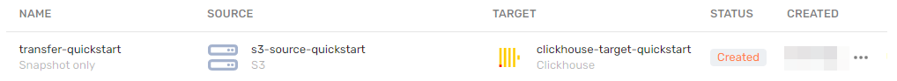
-
After you've created a transfer, click
 → Activate.
→ Activate. -
Wait until your transfer status changes to
Done. -
Check the data transferred to your ClickHouse database:
-
Open your Linux Terminal.
-
Connect to your cluster with the Native interface string from your cluster's Overview tab and type the following command:
Nice work! You have all the data transferred from a remote source and replicated with complete integrity in your own ClickHouse database. Now let's make this data earn its worth.
Visualize the data
After you have migrated the data from to your ClickHouse cluster, it's time to start building data displays. This process consists of the following steps:
In Visualization it works as a container for all other visualization elements.
This tool connects to your ClickHouse cluster to fetch and update the data.
-
Create datasets based on the data from your connection and prepare them for visualization.
This tool provides a canvas on which to place and organize charts.
-
Create tabs to organize related data into groups.
-
Create charts to visualize you data.
Create a workbook
Workbooks are visualization environments for data in your clusters.
-
Go to the console.
-
Select Visualization from the list of services on the left.
-
Click Create a workbook in the upper-right corner of the page.
-
Name you workbook
Booking Demo Workbookand click Create.
You will see the following line on your list of workbooks:
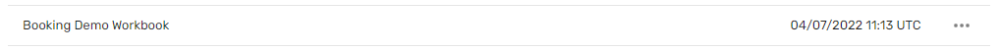
Create a connection
Connections access hosts in your cluster to fetch data for processing and visualization.
-
Click Create → Connection in the upper-right corner of your workbook page.
-
Select ClickHouse.
-
Specify the connection parameters:
-
Connection name. Let's call it
Sample ClickHouse DB. -
Hostname. Copy the name of a host from the Hosts tab on the information page of your cluster.
-
HTTP Interface Port (by default,
8443). -
Username and Password from the Overview tab on the information page of your cluster.
-
Under Raw SQL level keep the default setting - Forbid. This way the service will handle all SQL queries automatically.
-
Check the HTTPS box to enable this security layer.
-
Your connection parameters should look like this:
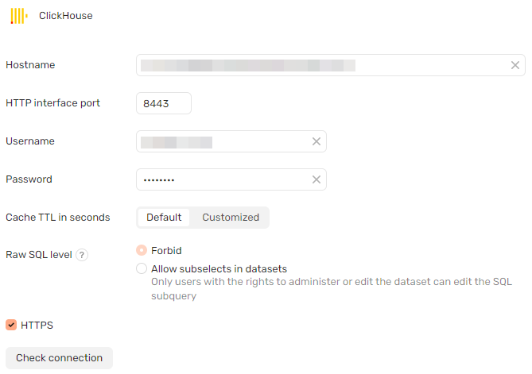
- Click Check connection.
If your connection is operational, you will see a green icon. If there is a problem, a red icon and a popup message with information about the error will appear.
- Click Create in the upper-right corner of the page.
If your connection is created correctly, you'll see this line under Connections on your workbook page:
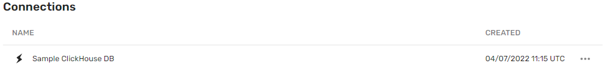
Create a dataset
Datasets process data from your connections and prepare them for visualization.
Based on our tutorial, create one or more datasets:
-
Click Create → Dataset in the upper-right corner of your workbook page.
-
In the Connections section, click + Add and select
Sample ClickHouse DB. You will see the list of tables that can be visualized in the Tables section. -
Drag and drop the table to the workspace on the right.
-
You can see the preview of the dataset in the Preview section below.
-
Click Save in the upper-right corner of your dataset page.
-
Enter the name for your new dataset:
Bookings Dataset. -
Return to your workbook page by clicking
Booking Demo Workbookin the breadcrumbs section in the top left corner of the page.
Prepare your dataset for visualization
Use calculated fields and aggregation to extract more value from your data.
-
Open your Workbook.
-
Select the
Bookings Dataset.
Let's take a look at the list of fields we've got here. The first column is Row num - this isn't the best option for a sorting field.
What's the best sorting parameter for a bookings dataset? It should be some sort of time indicator. But let's not make our time period too short - it shouldn't be days or months. Let's make it years.
Where do we take the year value from? Let's look at the dataset again. There is the Booking start field. But it's a timestamp with the standard YYYY-MM-DD structure.
-
Create a calculated field to extract the year number from this data column:
-
Click + Add button in the top right to create a calculated field.
-
Under Field settings specify the name for the field:
YEAR. -
Use the YEAR function in the formula:
-
Click Create in the lower-right corner.
You will see your new calculated field on top of the dataset field list, it will have
 icon in the Field source column:
icon in the Field source column: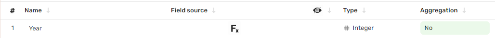
-
Hide the Row num column, since we won't use it:
-
Hover the cursor over
Row numin the list of dataset fields. -
Click the icon.
-
The field is now hidden and will be unavailable for visualization. To check that you've done this correctly, look if the field disappeared from the Preview section of the dataset.
- Apply aggregation to extract more value from data columns:
Look at the Bookings count column. Every row in it has the same value - 1. How can we make it more useful? Let's count the number of bookings:
-
Open the drop-down menu in the Aggregation column (it should have a value of
Noand the aggregation type should have a green background). -
Select Count. The data column will now return the number of rows it contains, the aggregation type background will change to blue:
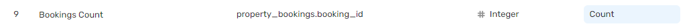
-
Look at the column names with
Sumin them. Apply the Sum aggregation type to these fields - they will now return the sum of values. -
Apply the Average aggregation type to the columns with
avgin their names - they will return the average value now. -
Apply the Number of unique type to the
Hosts countfield - it will return a number of unique values in it.
Your dataset fields should now look like this:
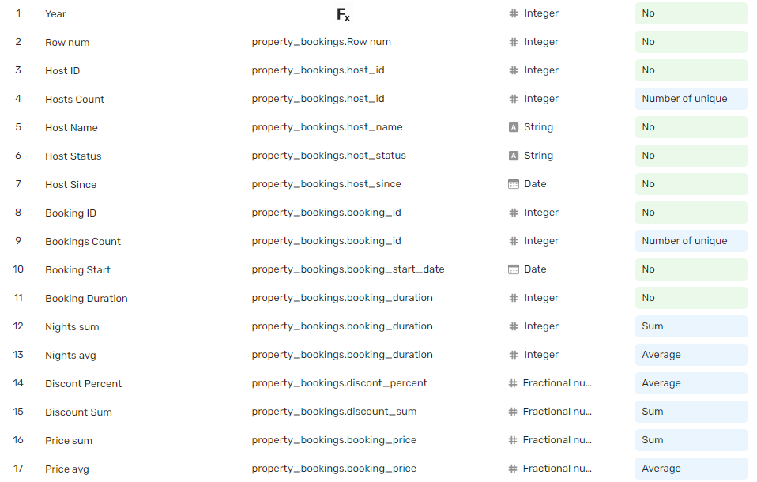
- Click Save in the upper-right corner of the dataset page to save changes.
Now the data is ready for visualization. Let's get right to it.
Create a dashboard
A dashboard is a customizable data display that provides you with capabilities to create and arrange charts and selectors.
-
Click Create → Dashboard in the upper-right corner of your workbook page.
-
Call it
Booking Dashboardand click Create.
Your dashboard will open in edit mode. You're ready to start populating it with tabs and charts:
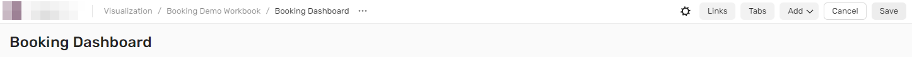
Create charts and selectors
To get you familiar with the most popular chart types in DoubleCloud Visualization, we'll create the following:
We will also add selectors to work as filters for your data visualizations.
Create an area chart
An Area chart is good at visualizing value changes over a period of time.
-
Click Add → Chart.
-
Select Bookings Dataset from the list.
-
Click the chart type field on the right of the dataset section and select Area chart from the drop-down list.
-
Drag and drop Measures and Dimensions to the appropriate sections of the chart:
-
YEARto X - this provides the timeline over which the data was changing. -
Price sumto Y - this is the value the changes of which we're going to visualize.
Your chart fields configuration should look like this:
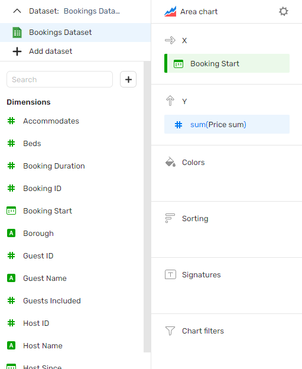
-
Now let's change the boring default blue color of the chart into something with a bit more zest:
-
Hover your cursor over the Colors field and click the icon.
-
In the popup window, select a different color for the
Price sumfield: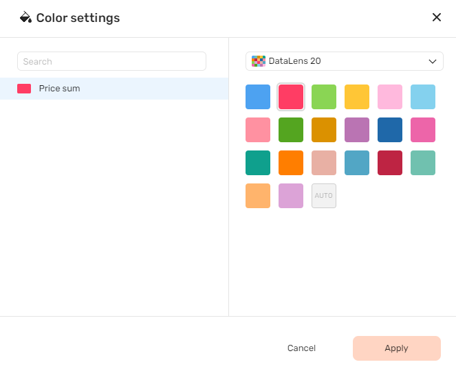
-
Click Apply.
-
Click Save in the upper-right corner of the page.
-
Let's call our chart
Priceand click Done. -
Choose the right location for your chart by dragging it around and resize it to your liking.
Additional Area chart practice
If you want to practice creating area charts a bit more, create a similar chart, but make it about Average price - choose the Price avg field for your Y field.
Create a bar chart
A Bar chart allows you to compare the same parameter between several categories. For instance, we'd like to know the number of bookings in each borough and compare them at a glance. Let's make it happen:
-
Click Add → Chart.
-
Select Bookings Dataset from the list.
-
Click the chart type field on the right of the dataset section and select Bar chart from the drop-down list.
-
Drag and drop Measures and Dimensions to the appropriate sections of the chart:
-
Boroughto Y - these are our categories. -
Bookings countto X - this is the parameter we want to compare between the categories. -
Boroughto Colors - this will paint horizontal bars in different colors to make the chart easier to read. -
Bookings countto Signatures - this will write the numeric value inside the bar.
Your chart fields configuration should look like this:
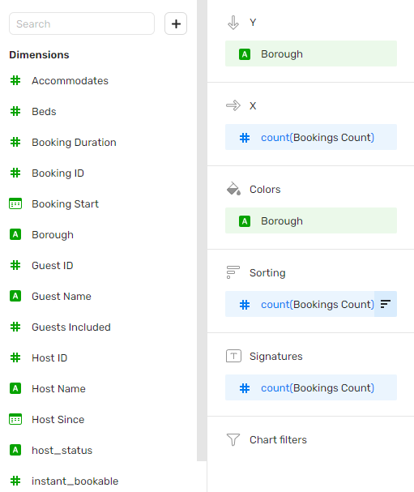
-
Let's call our chart
Bookings by Boroughand click Done. -
Choose the right location for your chart by dragging it around and resize it to your liking.
Aditional Bar chart practice
If you want to practice creating bar charts, create a similar chart, but make it about Price sum - choose the Price sum field for your X and Signature fields.
Create an indicator
An indicator shows a numeric value or a sum of values in large letters.
-
Click Add → Chart.
-
Select Bookings Dataset from the list.
-
Click the chart type field on the right of the dataset section and select Indicator from the drop-down list.
-
Drag and drop
Hosts Countto the Measure field.
Your chart fields configuration should look like this:
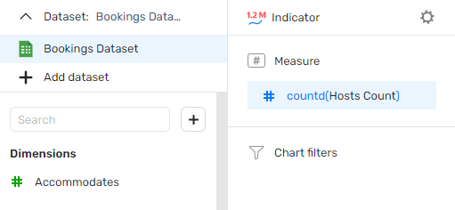
-
Let's customize the appearance of our indicator:
-
Hover your cursor over the Measure field and click the icon.
-
In the popup window, select the
Ssize and choose a different color:
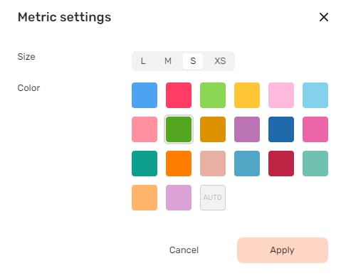
-
Click Apply.
-
Click Save in the upper-right corner of the page.
-
Let's call our chart
Hosts Count Indicatorand click Done.
Additional Indicator practice
If you want to practice creating indicators, create a similar chart, but choose the Bookings count field for your Measure field and select a different color for the numbers.
Add a selector
Selectors can work as filters for your charts and give you additional analytical flexibility.
-
Click Add → Selector.
-
From Dataset, select Bookings dataset.
-
From Fields, select Property Type.
-
In the Selector type field, keep List.
-
Toggle Multiple choice on.
-
Set the Belongs to a set Operation.
-
In the Title field, enter
Property type. -
Click Save
Now you can filter your charts by one or more property types. Give it a try.
{% note tip %}
If you want to practice creating selectors, create a similar one, but choose Borough for Title field.
{% endnote %}
After you've completed working with charts, click Save in the upper-right corner of the page to save the changes to the dashboard.
Below you can see a tab with sample data and layout:
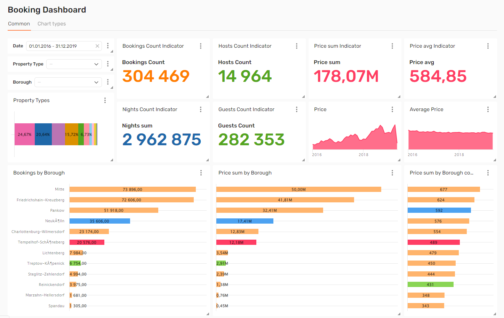
{% note tip "Add a sample dashboard to any project" %}
You can add this sample dashboard to any of your projects - click Add demo workbook in the upper-right corner of your All workbooks page.
{% endnote %}
This concludes the tutorial. There's a lot more you can do with DoubleCloud. Keep exploring!
See also:
Managed ClickHouse:
{{ data-transfer-name }}:
Visualization: